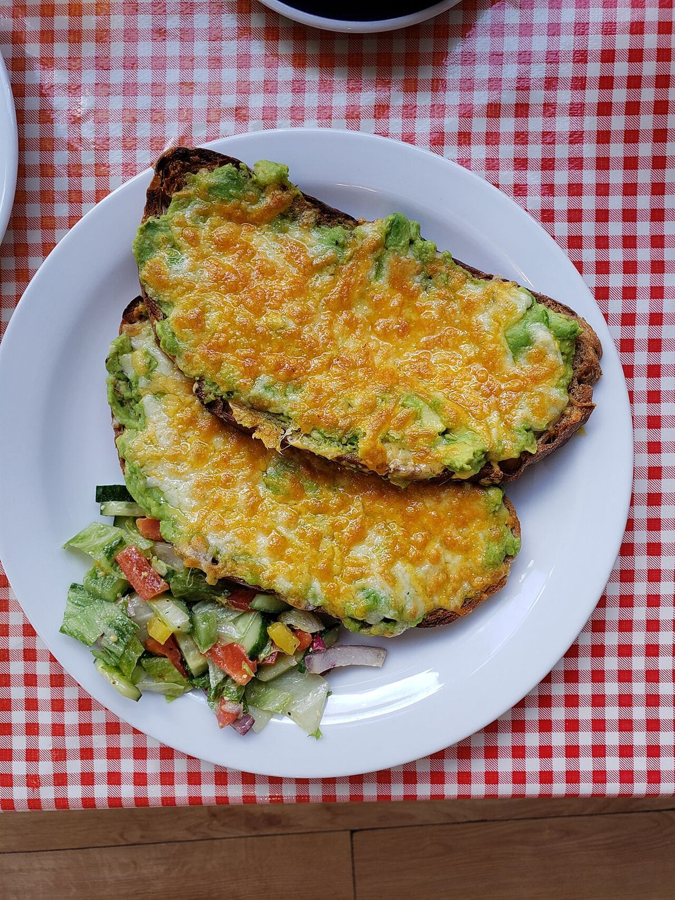
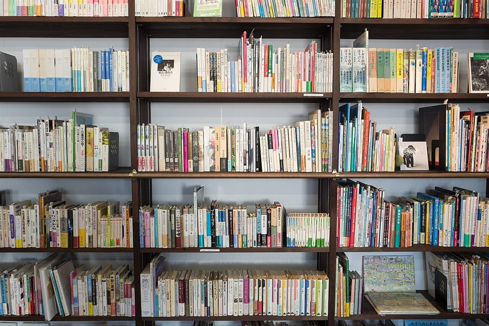
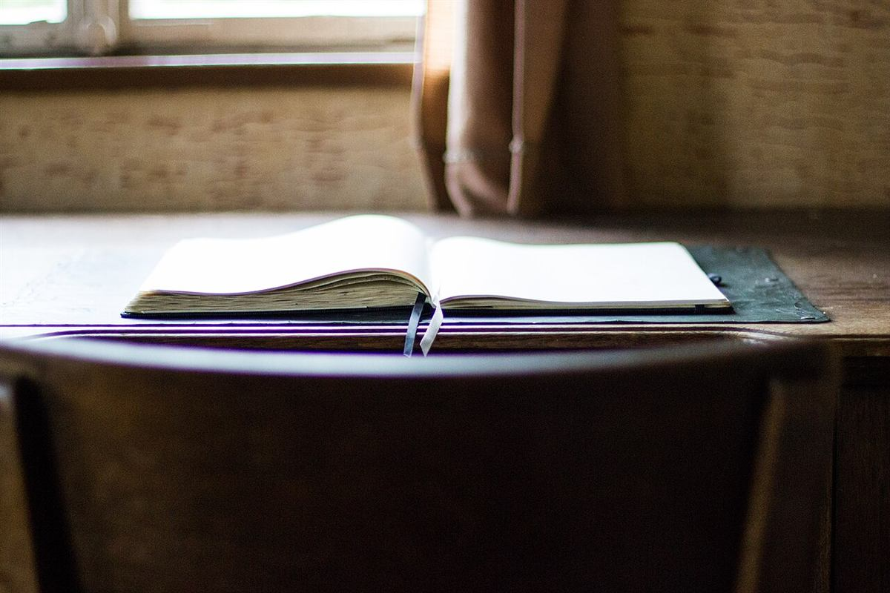
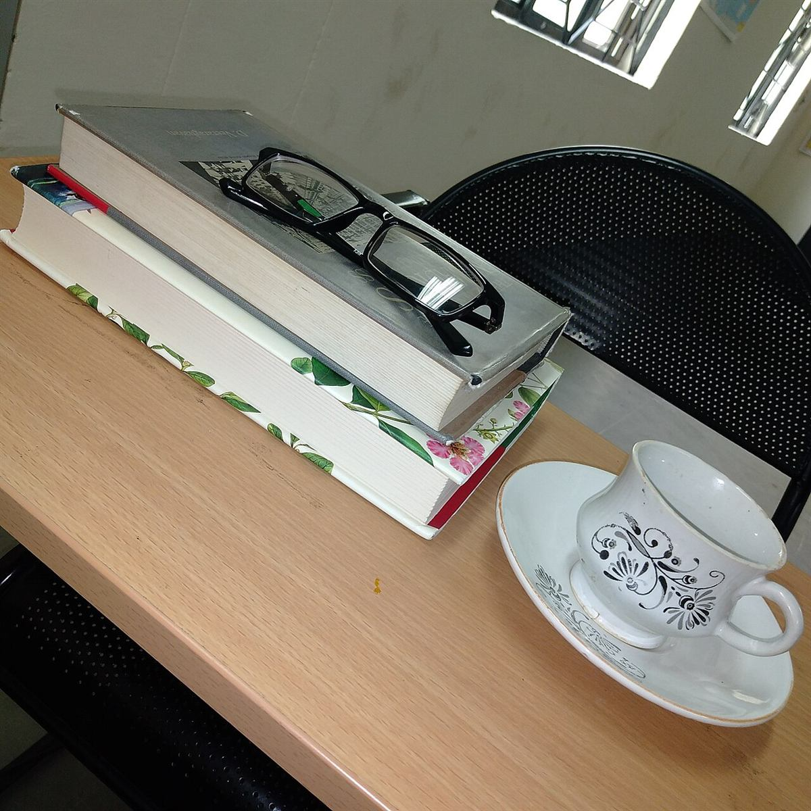

お家ごはん
内容・価格: 準備中

ABOUT
糸満市潮崎町にある「樹希」は、Instagramのプロフィールで「小さな図書室、1200冊の絵本とお家ごはん」と紹介されているお店です。絵本に囲まれた空間で、お家ごはんをいただくカフェとして営業されているようです。
店名の意味・由来は確認できていません。このページのデザインは、「本のぬくもり」と「家庭の食卓」を、制作側がイメージして作ったものです。



VOICE
以下は制作側が作った例文で、実際のお客様の声ではありません。
絵本の背表紙を眺めているだけで、気持ちがほどけました。
ご来店のお客様家で食べるようなごはんで、ほっとする時間でした。
ご来店のお客様子どもの頃に読んだ絵本を見つけて、つい長居しました。
ご来店のお客様写真はフリー素材のイメージで、店舗の実際の様子ではありません。実際の店内・商品写真は貴店ご提供のものに差し替えます